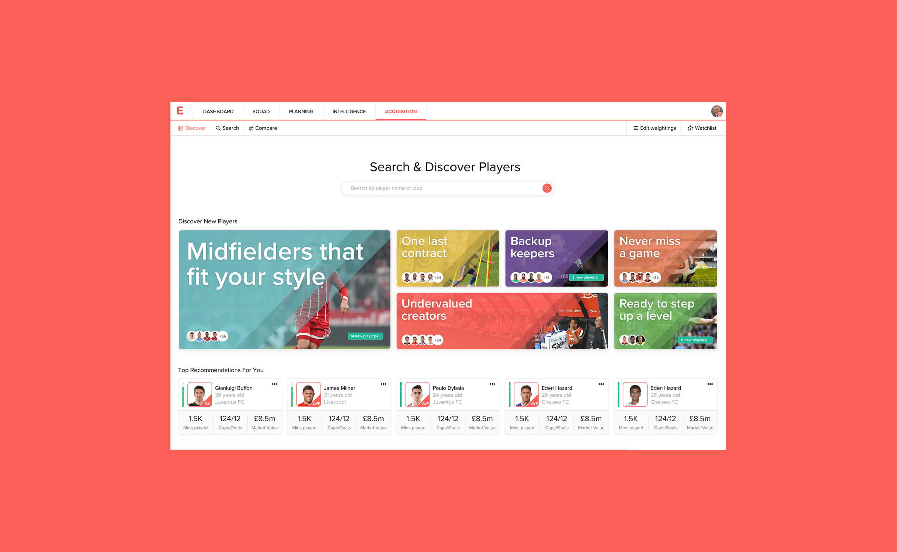

Evolution
Leading product design for an AI-powered talent identification platform used by leading football clubs, turning dense scouting data and predictive models into transfer decisions worth millions.

Million-pound decisions made from spreadsheets and gut feel
Twenty First Group is a sports intelligence consultancy advising organisations like the Premier League, European Tour and FIFA. Their data science team had built genuinely powerful models for evaluating footballers: how a player performs relative to their league, how that performance translates across markets, and how they might develop over time.
The problem was access. The insight lived with analysts and in static reports, while the people making the actual calls, sporting directors, heads of recruitment, scouts, worked from fragmented spreadsheets, video clips, and instinct. Comparing a midfielder in the Brazilian Serie A against one in the Eredivisie meant reconciling incompatible data sets, and transfer windows don't wait for that.
Evolution was the answer: a platform that put the models directly in the hands of clubs, so a director of football could ask sharper questions of a global talent pool without a data scientist in the room.

Sitting between the models and the people who buy players
The starting point was understanding both sides of the gap. On one side, the data scientists, whose models could rank and project players across global markets but whose outputs were dense, probabilistic, and easy to misread. On the other, recruitment teams at clubs, who think in shortlists, budgets, squad gaps, and deadlines.
I worked directly with the data science team to unpack what the models could genuinely support, and where confidence dropped off. That distinction mattered: showing a projection without communicating its certainty is how expensive mistakes happen. The design challenge wasn't visualising data, it was building the right level of trust in it.

AI that recommends, people who decide
Evolution's core promise was AI-driven transfer recommendations: surfacing players a club should be looking at based on their squad profile, budget, and style of play. But no sporting director will stake their job on a black box. The product had to show its working.
Every recommendation was designed to be interrogable. Users could trace why a player surfaced, compare them against known quantities in leagues they understood, and adjust the parameters themselves through custom filters. The AI narrows a global market of thousands of players down to a shortlist worth watching. The humans take it from there.

A design system built for density
Scouting platforms live and die on information density. The people using Evolution wanted more data on screen, not less, but dense doesn't have to mean impenetrable. I led the development of a design system built specifically for data-heavy interfaces: consistent chart components, comparison layouts, status indicators and typographic hierarchy that let complex screens stay scannable.
The system meant new features, and there was always a roadmap of them, could ship without every screen becoming a bespoke design problem. It also kept the product coherent as the team scaled around it.


The player profile
The player profile is where a name becomes a case. It brings together performance data, market context, and the model's projections in a single view, structured so a recruitment lead can move from headline judgement to underlying evidence without leaving the page. The comparison views sit alongside, letting clubs benchmark a target against players they already know intimately, the fastest way to build intuition about an unfamiliar market.

Scenario planning
Recruitment doesn't happen one player at a time. Clubs plan squads across seasons, budgets, and contract cycles. The scenario planning view let teams model how different signings would reshape their squad profile, testing decisions before committing millions to them.

Evolution on the move
Scouts spend their lives in stadiums and airports, not at desks. The responsive mobile experience focused on the moments that matter away from the office: checking a player profile from the stands, reviewing a shortlist on the road, and capturing quick judgements while they're fresh.


In the hands of clubs worldwide
Evolution became a core product in Twenty First Group's portfolio, used by leading football clubs globally to analyse squads, compare players across markets, and inform transfer strategy. It took intelligence that previously required an analyst in the room and made it something a club could act on directly.
For the design team, it set the pattern for how we approached every data product that followed: work embedded with the data scientists, design for trust before beauty, and never let the model make a decision a human should own.